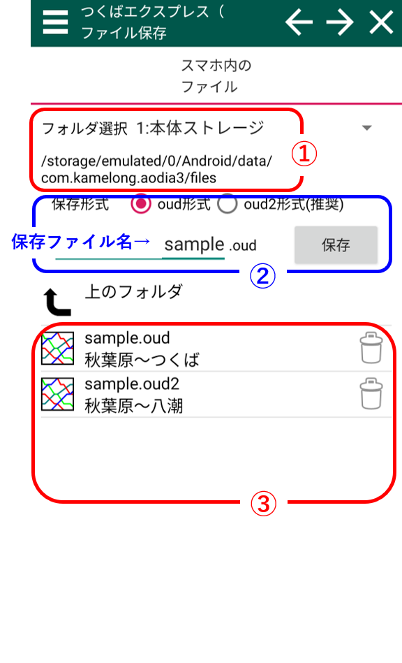
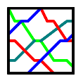

ファイルを保存する
スクショの番号の対応した説明があります。スマホ内に保存する
①：スマホ内のメインフォルダ選択
「AOdiaアプリデーター保存フォルダ」、「ダウンロードフォルダ」を選ぶことができます。 その下には現在のフォルダのアドレスが表示されています。②：保存ファイル名
ここに保存ファイル名を入力します。③：保存形式
- oud形式：番線情報や路線外始発駅情報を失います。PC版OuDiaで開くことができる形式です。
- oud2形式(推奨)：このアプリで用いる全てのデータが保存されます。PC版OuDiaではこの形式のファイルを開くことはできません。OuDiaSecondではこの形式に対応しております。
④：ファイル表示欄
各ファイルに対して、ファイル名と路線開始駅・終了駅が表示されています。 ファイルをタップするとそのファイル名が保存ファイル名欄に入力されます。このダイヤアイコンのファイルを開くことができます。
このボタンを押すとファイルが削除されます